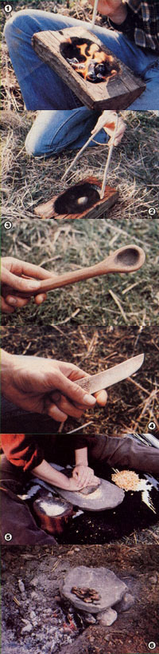

Tom Brown, Jr. was brought up in the ways of the woods by a displaced Apache named Stalking Wolf. Today, he is one of our country's leading outdoors experts, author of the Tracker and The Search, and head of one of the largest tracking and wilderness survival schools in the U.S. (write Tom Brown, Jr. , Dept. TMEN, Box 173, Ashbury, New Jersey 08802). Tom has agreed to do a series of special features for MOTHER, articles that will help us all learn how to survive in the wilds. With the Tracker's guidance, we can become more...
After supplying him- or herself with shelter, water, and warmth, the survivalist must give attention to the search for nourishment. However, even after locating food, folks who find themselves unexpectedly stranded in the wilderness aren't likely to have much in the way of supplies or cooking equipment. For that reason, I'm going to devote this article to describing survival cooking techniques that require no ready-made tools or other manufactured gear. The only implements mentioned in this piece will be those you can easily make yourself, and the rudimentary skills used to fashion them should be within the capabilities of almost anyone.
Naturally, the first thing to consider when survival cooking becomes necessary is how best to prepare the meal with the materials at hand. Stewing is probably the most useful all-round cooking method because it's simple, a stew can be saved-and added to-from one meal to the next (many pioneers and early settlers kept a pot bubbling on the fire all year long), and the various combinations of food can provide plenty of nutrition. Unfortunately, making a stew does require a cooking vessel of some kind. Pit cooking is a good second choice, but it is both time- and effort-intensive. Spitroasting and frying are adequate, too . . . but not as desirable as the first two options, because much of the nutritional value of the food is often lost in such preparations.
FIRE, STICKS, STONES, AND BONES
Fire is one of humankind's most important tools, and its value is magnified in a survival situation (see MOTHER NO. 73, page 78, for tips on starting a fire without matches). Not only does it provide warmth for the body and heat for cooking, but it can also serve as a means of carving, bending, and forming implements that are necessary for wilderness living: And since, when faced with an unexpected emergency, many people are likely to lack even a pocketknife, fire must often be relied on to make the cooking utensils that are essential to assuring long-term subsistence.
With the help of fire, a simple cooking container-a pot, a cup, or a spoon-can be made in the wilderness. Your first task is to find a suitable log or branch. Simply look around the area until you locate a chunk of wood that's neither punky nor rotten, but big enough to be made into a practicable container. A piece of timber that'll hold a quart or two of liquid and solids when its center has been burnt out to form a bowl will make a good stew pot.
Take care, however, that you don't use a variety of tree that's potentially poisonous. I try to utilize pines, cedars, hemlocks, firs, oaks, hickories, and sassafras for my cooking utensils and containers. And remember: Hardwoods take more time and effort to burn out, but they're better than softwoods at holding foodstuffs without allowing liquids to seep into the container walls.
Once you've selected a suitable chunk of raw material, chip away the bark from one side until you have a flat surface, or platform. Then place hot, glowing embers from your fire in the center of the level spot and blow on them, causing them to burn slowly into the wood.
Because the coals will tend to burn directly down, you'll find that the process creates a natural bowl shape. Using this technique, you should be able to fashion a one- to two-quart pot from a cedar log in a little less than an hour. (Harder woods like oak can take two hours or more.) With a bit of patience and practice you'll find that containers of several sizes can be fashioned fairly quickly and adapted to a wide variety of uses in your wilderness kitchen.
After charring the depression to the size and shape you want, use a sharp stone to scrape out the burnt, flaky residue inside the bowl. Then find a rounded rock and use it as a sanding stone to grind out and finish your work. The result will be a vessel that's very effective for cooking and holding foods.
Fashioning a spoon involves a similar operation. Simply take a piece of wood about 1/2 inch thick and 6 to 7 inches long, and place a single hot coal close to one end. Blow on the ember steadily until a small, dish-shaped depression has been formed. Then scrape out the burned area, and use a rock to sand or carve the rest of the wood to a shape that suits your hand.
Actually, you'll find that stones are useful for more than merely scraping and carving utensils. In fact, they're among the best all; purpose tools available to the survivalist. A rock can do just about anything that an axe, knife, or piece of sandpaper can, and the earth provides us with a wide assortment of stone shapes and textures from which to choose.
Rocks can, for example, be struck against one another to form sharp fragments or edges good for scraping and cutting a variety of materials. (As your proficiency grows, you might want to learn to work rocks with simple knapping or abrading techniques to create sharp, long-lasting edges.) They can also be used for grinding and whetting, since their many variations in grit and texture make them fit for a number of such tasks. You can even form a rock into a dish or metate, for grinding wild grains, by hitting it with a hammer stone (a small, easily held rock that's harder than the one you're shaping) in a circular, pecking motion. True, the procedure will take a long time . . . but any tool that you can make of rock is likely to improve your chances of getting out of a survival situation alive and in good health.
Bones can also become good tools. By selecting suitable ones (such as the cannon bone from a deer) and sharpening them on a rock with a simple abrading motion, you can produce serviceable knives, scrapers, and awls.
COOKING TECHNIQUES
As I've mentioned before, all animals that you intend to eat should be thoroughly cooked to insure that any parasites they might contain will be destroyed . . . in other words, treat all meat as though it were pork. Each creature (with the exception of insects) should be eviscerated, skinned, and carefully checked for any diseases or abnormalities prior to cooking (use unhealthy-looking specimens only for bait). Some plants, too, must be cooked to render them edible, because many contain poisons that need to be destroyed by heat. (For more detailed information on this matter, refer to a good field guide or my article on the subject on page 66 of MOTHER NO. 75.)
Here, then, are half a dozen reliable wilderness food-preparation methods.
Rock boiling. This is not only one of the oldest forms of cooking, but probably also the most useful in situations when you're forced to employ a container that can't be heated directly over a fire. Using hot rocks, food can be cooked in one of the hollowed-out wooden vessels described in this article . . . and much of the nutrition contained in the raw ingredients will be retained.
The best rocks for this purpose are small and rounded, about the size of golf balls. However, because some stones store water in tiny cracks and fissures, it's best not to take them from streams or other damp areas. Heating such a rock can cause the water it contains to vaporize and expand, often exploding the stone dangerously. For that reason, only bone-dry rocks should be used. I also recommend that sandstone, flint, obsidian, quartz, and any other hard, fireformed silicate types be avoided, as they tend to shatter when heated and then placed in water.
To cook your meal, collect from six to ten small stones and heat them in a fire for about two hours (when in an actual survival situation, it's a good idea to keep a number of them in your fire at all times). Place the edible plants and animal parts you intend to cook in your hollowed log, cover them with water, and then remove a rock from the fire with a forked stick or a set of twig tongs and put it in the cooking pot. The water around the rock will begin to boil at once, and, as you keep heating and adding stones, all the liquid in the container will eventually be bubbling. When the boiling begins to slow, remove the first rocks and replace them with fresh ones, continuing the process until your dinner is ready.
Spit cooking. Another ancient form of food preparation, open-fire roasting, is quick but does tend to waste much of the nutritional value of the food. A gutted, skinned, and cleaned animal is simply skewered on a spit made from a thin (nonpoisonous) sapling, suspended over the heat, and turned frequently. (It's best to cook over coals, since open flame will char the meat.) Roots and tubers can be added to the spit and cooked along with the meat, shish kebab style, or wrapped in wet leaves or grasses and roasted in the coals.
Pit cooking. This method is as effective and nutritious as stew cooking, but requires considerably more time and effort. First, dig a hole in the ground (for a rabbit, as an example, your pit would measure about 2 feet square and 1-1/2 feet deep), line the bottom with flat, dry rocks, and build a fire over the stones, allowing it to burn for at least 3 hours (until the rocks are hot and glowing). Then, about 2-1/2 hours before you plan to eat, scrape out the remainder of the fire and the coals, and line the pit with at least 8 inches of green, nonpoisonous grasses. On top of these, place the food to be cooked: meat, tubers, roots, or other hearty fare (herbs and such are likely to burn up if you try cooking them this way). Next, place another 8 inches of grasses over the food . . . then seal off the pit with slabs of bark. Finally, cover it with at least 6 inches of earth and allow the meal to cook for about 2-1/2 hours. When it's time to eat, just scrape the dirt away, remove the bark, and pull out the greenery . . . being careful not to burn yourself, since the grass will be hot and steamy. Your food will be well-cooked, and should have retained most of its natural juices.
Fry-rock method. A fry rock is simply a flat, thin rock that has been cleaned of all dirt and debris (I like to scour mine with some horsetail or dried grasses to remove the dust and grit). Place the fry rock over the fire, propped on three or four small stones, and allow it to get hot. You'll find you can cook just about anything with the same results you'd get from a metal frying pan. But while it's a quick and easy cooking method, rock frying will deprive you of many of your food's essential nutrients.
Rock oven baking. You can make an oven alongside your fire pit by building a rectangular structure of rock with its opening facing the fire. Close off the back, sides, and top with dirt and sod, and the box will catch and retain some of the heat given off by the flames, allowing you to bake food in it as you would in a stove's oven. The temperature can be controlled either by shifting the position of the fire, or by letting it die down. (When removing your meal, keep your hands well away from the rocks. They'll be very hot and could cause severe burns.)
Board or rock reflector system. This simple method uses a rock or slab of wood (again, be sure it's from a nonpoisonous tree) propped, at about a 45° angle, in such a way that the heat from the fire will slowly bake meat that's been placed against the reflector. The food should be turned often for even cooking.
STORING-UP FOR LEAN TIMES
In a survival situation, storing food is a must if you're going to get through the lean times when you come up empty-handed. Luckily, it's easy enough to do. By simply jerking meat and drying roots and tubers-and storing them in a cool, dry place-you'll be able to keep meals preserved until you need them.
The best way to prepare meat for storage is to cut it into thin strips-a quarter-inch thick, an-inch wide, and as long as possible-taking care to remove as much fat as you can. Hang the ribbons on a makeshift drying rack or dead bush in an area exposed to direct sunlight, allowing them to cure until they crack when bent. The best storage spot for the finished jerky would be in the back of a cave or in some other cool, nonhumid area such as one of the leaf huts I described in MOTHER NO. 71 (page 58). A dry hole in the ground, lined with dried-out grasses and covered with a flat rock, is another good storage cache.
Small animals such as squirrels, chipmunks, and certain birds can be easily dried by simply cleaning, skinning, and opening up the carcass and then leaving it to dehydrate in the sun. After the meat is dry, the animal should be pounded with a rock in order to split the bones and expose the marrow, then left to sun-dry a second time (if this isn't done, the marrow will rot and spoil the meat).
Roots and tubers can be preserved for storage by slicing them very thin and allowing them to dry thoroughly on a flat rock placed in the sun. Herbs and other leafy vegetables should be bundled up and hung-root side uppermost-in a dry, shady place (such as the inside of your hut).
PRACTICE MAKES PERFECT
Finally, and most important of all, remember that the best time to practice any survival skills-cooking, foraging, or whatever-is before you need them. When you're lost in the back country, cold, hungry, and probably more than a little bit scared, it is definitely the wrong time to be just learning how to stay alive. Wilderness living requires hard-earned knowledge . . . but even if you're never lost in the wilds, the rewards of mastering survival lore are substantial. By doing so, you'll not only build your self-confidence, but also increase your ability to enjoy and respect the natural world around you.
EDITOR'S NOTE: Remember, never eat any wild food that you're not totally familiar with. Use a good field guide-or "apprentice" yourself to an adept forager-to sharpen your identification skills.
|
 [1] All you need in order to make a cooking/eating bowl is a chunk of wood and hot coals. (A blowing tube will speed the burning process.) [2] Homemade tongs handle hot stones for rock boiling. [3] Use one burning coal, and then ""sand"" a spoon to shape. [4] A bone knife is a valuable tool. [5] You can grind wild grains in a hallowed-out rock metate. [6] A stone oven bakes meat, bread and tubers. |
|
|